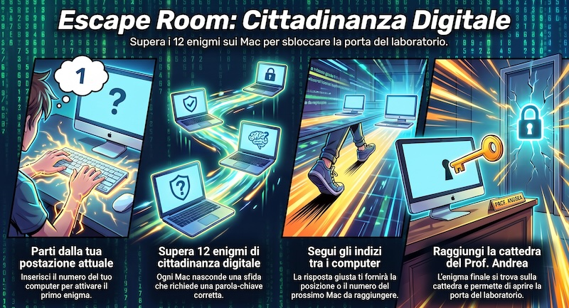

Complimenti: hai risolto tutti e 12 gli enigmi di cittadinanza digitale e hai aperto la porta del laboratorio. Sei nel corridoio: libero!
Obiettivo. Uscire dal laboratorio risolvendo 12 enigmi nascosti nei Mac.
Muoversi. Clic per bloccare il mouse e guardarti intorno · frecce per camminare.
Accedere a un Mac. Avvicinati finché compare il suo numero e premi Invio o fai clic. Ogni Mac ha un cartellino azzurro col numero sopra lo schermo; la cattedra del prof è segnata PROF.
Enigma. Scrivi la parola-chiave giusta. Se sbagli, va’ a studiare le parole nel MacBook del prof. Andrea (a capotavola) e poi riprova. Se è corretta ricevi l’indizio per il Mac successivo.
Indizio. A volte è un numero da calcolare (quello è il Mac), a volte descrive la posizione nell’aula: fila nord (finestre) o sud (porte), tavolo est o ovest.
Oggetti stampati in 3D. Sul bancone della stampante ci sono due pezzi da raccogliere: il Cifrario (serve per un enigma con messaggio cifrato) e la Chiave (serve per aprire la porta finale). Avvicinati e fai clic per prenderli; li vedi nell'inventario in alto a sinistra.
Fuga. Dopo il 12° enigma la serratura è pronta: prendi la chiave 3D dal bancone e usala sulla porta per uscire nel corridoio.
Suona la melodia scritta sulla pergamena: clicca i tasti nell’ordine giusto.